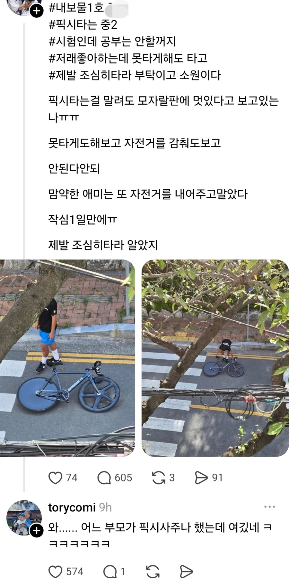

233 · 6 · 23 시간 전 · 원문

저게 그렇게 위험하다는데
수집 당시 댓글 6개
개중년 · 14 시간 전
저게 돈이 얼마야 ㄷㄷㄷㄷ
카본 디스크휠에 카본 오발이라니 허어
의미없는닉네임은없네 · 14 시간 전
진짜 차라리 담배를 허락하는게 나을수도 있음
↳ 답글 · 개중년 · 14 시간 전
내일 죽으면 매몰비용이 낮긴 해
개중년 · 13 시간 전
저정도 맞출 돈이면 전동구동계도 달 수 있을 것 같은데
요즘은 선 안보이는 이쁜 자전거도 쌈
달곰달곰이 · 13 시간 전
안된다안되 ㅜㅜ
장카설 · 13 시간 전
좆같은게 저거 타는 애들 꼭 몰려다니면서 공원같은데서 사람들 사이로 빠르게 칼치기함 그러다 굴러가는 공에 넘어져서 안면에 피 철철나는것도 봄
저게 돈이 얼마야 ㄷㄷㄷㄷ
카본 디스크휠에 카본 오발이라니 허어